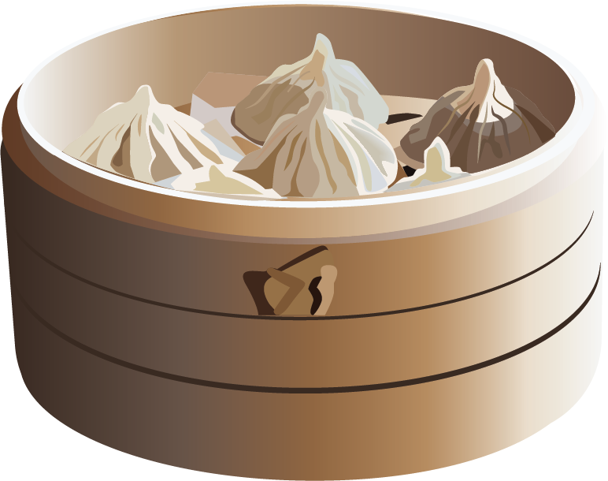
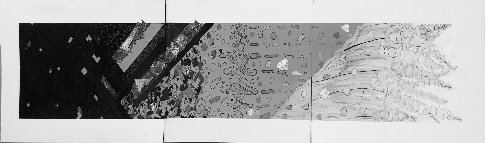
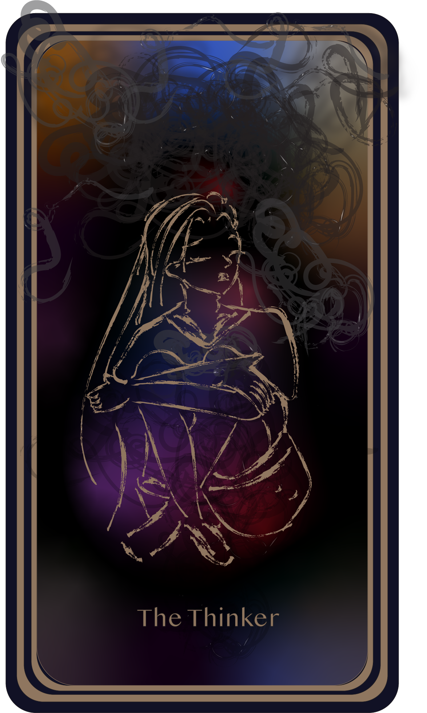
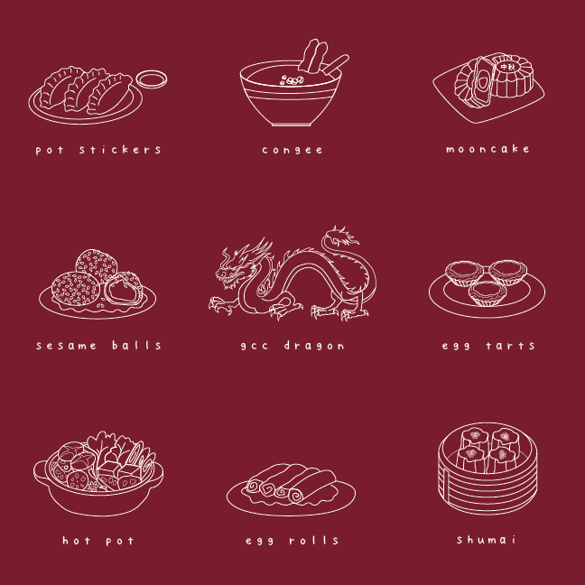
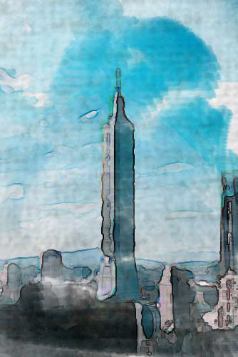
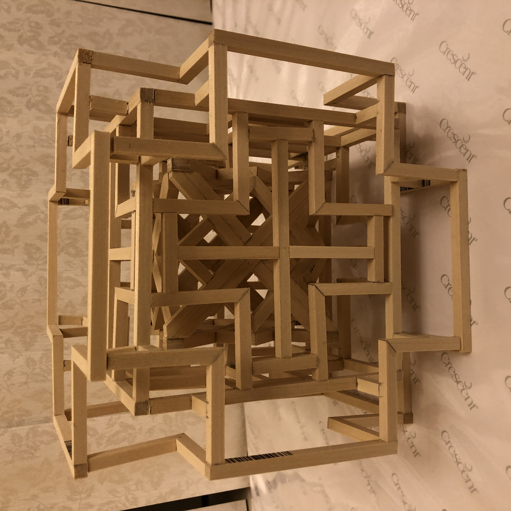
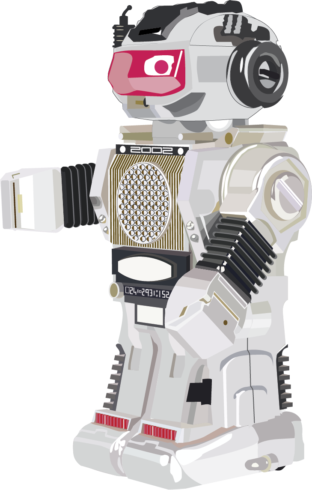

Hello hello!
I'm Cecilia Chen, a sophomore at Drexel University, majoring in UXID (User Experience and Interaction Design), minoring in Psychology and Behavioral Economics and Business.







